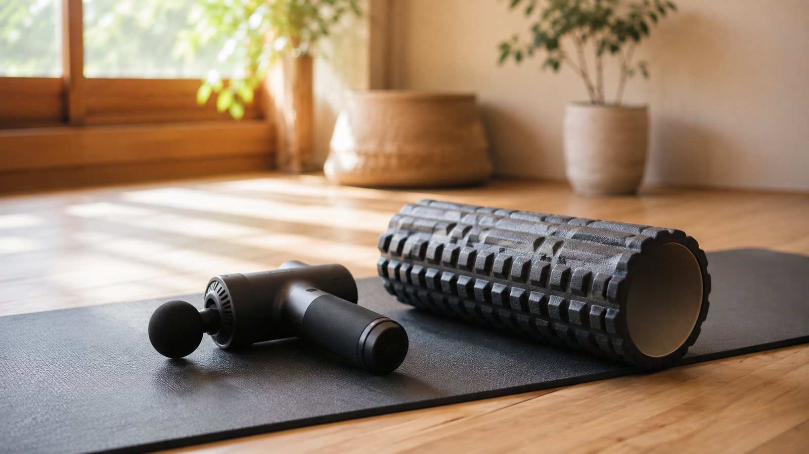
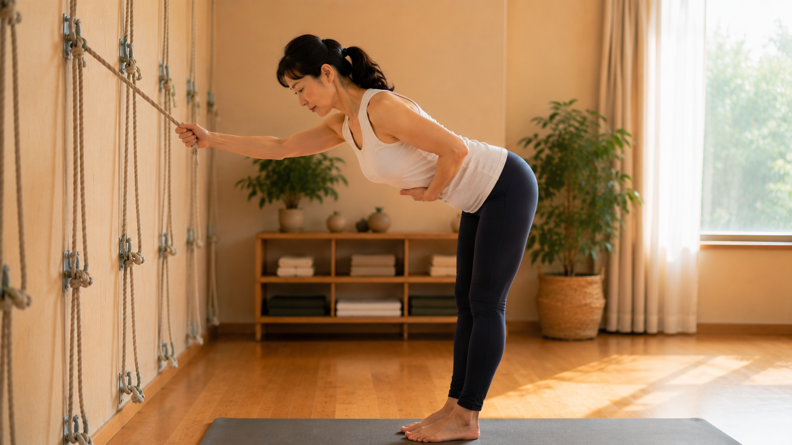

按摩槍、筋膜刀有用嗎？跟壁繩瑜伽差在哪

- 按摩槍與筋膜刀並非無效，而是屬於「暫時性神經降敏與機械滑動」的被動放鬆層次。
- 高頻震動主要刺激帕西尼氏小體並啟動疼痛閘門控制理論，暫時麻痺痛覺，但未重塑骨骼幾何力線。
- 肌肉緊繃往往是關節失穩的「保護性代償」；若盲目震鬆苦撐的肌肉，大腦會因缺乏支撐而引發更嚴重的痙攣反彈。
- 壁繩瑜伽提供物理懸掛自重減壓，引導學員在無痛窗格內啟動深層穩定肌群，徹底斬斷「按完又緊」的死循環。
- 頸前動脈三角、脊椎骨刺骨面、急性深層靜脈血栓（DVT）嚴禁施打按摩槍，以免引發中風或致死性肺栓塞。
按摩槍、筋膜刀、花生球、滾筒——這幾年隨著運動風氣普及，幾乎每個人的客廳或辦公室都有一兩支震動按摩器具。當下背發酸、肩頸僵硬時，拿起槍來一陣狂打，伴隨著酥麻發熱的觸感，確實能帶來短暫的舒爽。但你是否也曾感到困惑：「為什麼我每天晚上打得那麼痛、那麼認真，隔天下午一坐回辦公桌，同樣的痠痛又原封不動緊了回去？」
先講結論：不是好壞之爭，而是「被動神經降敏」與「主動作動力鏈重構」的層次差異
許多人在尋找解決方案時，常將自我放鬆工具與瑜伽課程對立起來。事實上，在運動醫學與神經生物學的視角下，它們各自處於完全不同的生理層次：
- 放鬆工具（按摩槍／筋膜刀）：本質是「被動局部輸入（Passive Sensory Input）」。主要作用於淺層皮膚、肌梭機械受器與淺筋膜，藉由外力刺激暫時改變神經感知與局部微循環，使用門檻低且見效迅速。
- 壁繩瑜伽（Wall Rope Yoga）：本質是「主動作動力鏈神經重塑（Active Motor Control & Neuromuscular Integration）」。利用牆面繩帶提供「去重力牽引」，在卸除關節剪切力與壓力的前提下，訓練大腦重新招募深層姿勢肌（如前鋸肌、多裂肌、腹橫肌），從力學根源消解代償張力。
神經生理深入剖析：三種途徑的真實物理機轉
要明白為何單靠工具無法治本，必須先看懂人體在接受不同機械刺激時的神經生理反應：
1. 按摩槍（Percussive Therapy）：高頻震動與疼痛閘門控制
按摩槍以每分鐘 2000 至 3200 次（約 30 到 50 Hz）的高頻反覆衝擊肌肉組織。這種震動強烈刺激了真皮層與深筋膜內的「帕西尼氏小體（Pacinian Corpuscles）」與快適應機械受器。根據神經醫學經典的「疼痛閘門控制理論（Gate Control Theory）」，較粗、傳導較快的 A-beta 觸覺本體感覺神經纖維放電，在脊髓後角搶先「關閉了閘門」，暫時阻斷了較細的 A-delta 與 C 纖維痛覺訊號向大腦丘腦傳遞。簡言之，你的大腦不是不痛了，而是被密集的震動訊號給「覆蓋麻痺」了。衝擊結束後，隨著神經適應消退，痛覺便會重新顯現。
2. 筋膜刀（IASTM）：微受損剪切力與膠原纖維滑動
不鏽鋼筋膜刀利用邊緣在皮膚表面施加壓力與剪切應變力（Shear Strain）。其機械刺激能破壞病理性的筋膜微沾黏，刺激巨噬細胞吞噬老舊碎屑，並激活纖維母細胞（Fibroblasts）分泌透明質酸（Hyaluronic Acid），短暫增加筋膜各滑動層（如胸腰筋膜層間）的流動度。然而，如果刮完之後沒有進行正確的動作模式引導，新生的膠原蛋白在日常不良姿勢的重力壓迫下，依然會依照原有的扭曲應力重新排列黏連。
3. 壁繩瑜伽：自重減壓牽引與大腦動作重組
壁繩瑜伽完全跳脫了「被動受力」的框架。繩帶透過人體骨骼支點（骨盆髂骨、肩胛胸壁）提供反向拉力，在物理上創造出關節腔間隙（Joint Clearance），此時大腦內的威脅警報解除，副交感神經被啟動；學員在老師的引導下，在沒有重力壓迫的空間中主動發力呼吸、旋轉胸椎與收緊核心。這是在神經層面建立「全新的主動動作程式（Motor Enframing）」，讓身體學會自己保護自己。

為什麼狂打按摩槍，隔天還是緊回去？揭秘「保護性代償痙攣」
這是絕大多數現代上班族最常陷入的生理盲點。在臨床生物力學中有一句名言：「發出尖叫的肌肉，往往只是無辜的受害者，真正的元兇正躲在陰暗處偷笑。」
舉例來說，長期的圓肩駝背與頭前傾，會讓你的後背菱形肌與中下斜方肌整天處於「被動離心拉長超載（Long and Tight）」的狀態。這兩塊肌肉之所以緊繃發硬，是大腦發出的「保護性強直痙攣（Protective Spasm）」——大腦知道如果這些肌肉不全力咬緊，你的整個肩膀就會徹底往前垮掉，頭部重心更會向前傾覆數十公斤！
如果你不明就裡，每天拿起按摩槍往緊繃痠痛的上背菱形肌一陣猛打狂震，好不容易把這些苦苦支撐的代償肌肉打到麻痺疲勞放鬆，結果一站起來走進辦公室，大腦驚覺：「天啊！後方完全失去拉力支撐，肩關節快要脫位了！」中樞神經系統為了自保，便會立刻下達緊急動員令，命令周圍肌肉在 24 小時內引發更猛烈的反射性強直收縮。這就是為什麼許多人覺得「越打越緊、越按越痛」的真正生理機制！
工具放鬆 vs 壁繩訓練 完整維度對比表
| 比較維度 | 按摩槍／筋膜刀 | 壁繩瑜伽（Wall Rope Yoga） |
|---|---|---|
| 主要作用機制 | 被動高頻震動、閘門控制理論降敏、局部微循環增加 | 物理自重懸掛牽引、深層神經肌肉主動募集、關節減壓 |
| 主要受惠組織 | 皮膚、淺層肌腹、淺筋膜間微沾黏 | 深層姿勢穩定肌、關節韌帶力線、自主運動控制迴路 |
| 放鬆維持時間 | 短暫。數小時至 1 天內即隨神經適應與生活姿勢回彈 | 長效。神經重塑建立後，轉化為持久的日常體態反射記憶 |
| 能否改善骨骼力線 | 否。工具無法教導大腦如何收緊深層核心維持骨盆中立 | 能。直接在精準力線下重構胸椎伸展、骨盆水平與肩胛穩定 |
| 操作風險與門檻 | 需高度注意禁忌區域；位置或力道用錯極易引發血腫神經傷 | 在專業老師評估與繩具安全鎖定下循序漸進，安全性極高 |
日常分流指引：什麼時候用工具？什麼時候必須進教室？
我們鼓勵學員建立清晰的分流思維，將有限的時間與精力投注在最合適的環節：
- 適合使用按摩槍／筋膜刀的情境：
- 高強度健身重訓、路跑或登山後的 30 分鐘內，針對大腿股四頭肌、小腿腓腸肌等厚實大肌群進行 3 到 5 分鐘的微幅震動收操。
- 下班剛回到家，當下感覺大腿後側或臀部表層緊繃，想快速降低痠脹感以利入睡（每處不超過 1 分鐘，避開骨骼）。
- 必須進教室進行壁繩瑜伽的情境：
- 同一處痠痛（如膏肓痛、後頸緊、下背酸）反覆發作超過一個月，按摩放鬆隔天立刻打回原形。
- 自己照鏡子或拍照時，明顯看見圓肩、駝背、高低肩、頭前傾或假性小腹前凸。
- 在地板做伸展時關節劇烈擠壓，手腕撐地疼痛，缺乏身體本體感覺。
- 渴望建立由內而外持久穩定的體態，不想一輩子依賴被動推拿按摩。
嚴格安全禁忌與急症紅旗（Red Flags）：絕不能碰按摩槍的危險狀況
自我放鬆工具若使用不當，極易引發不可逆的醫學傷害。請嚴格遵守以下安全禁區：
- 絕對禁打區域一：頸部前側與兩側（頸動脈三角）：此處緊鄰頸總動脈與迷走神經，高頻震動會強烈刺激頸動脈竇引發迷走神經反射，導致心跳驟停或血壓斷崖式下跌；若血管內壁已有粥狀硬化斑塊，震動可能導致斑塊剝離隨血流衝向大腦，引發急性缺血性腦中風！
- 絕對禁打區域二：脊椎骨棘突骨面與關節腔：頸椎、胸椎與腰椎正後方摸到的硬骨頭為「棘突」，表面缺乏肌肉保護，按摩槍直接硬打骨頭會震破骨膜，並造成下方脆弱小面關節滑膜創傷水腫。
- 絕對禁打區域三：腋下、手肘內側、膕窩（膝蓋後方）：這些區域皆為主要神經血管叢走行的脆弱通道（如臂神經叢、坐骨神經分枝），高頻衝擊會直接造成神經髓鞘挫傷麻木。
- 急症紅旗：深層靜脈血栓（DVT）：若單側小腿突發紅腫熱痛、觸痛明顯，嚴禁使用任何按摩槍或深層推拿！外力震動會使深層靜脈血栓脫落，沿著血流經右心室直衝肺動脈，造成致死率極高的急性肺栓塞（Pulmonary Embolism）！
- 急性發炎與神經症狀：痛處劇烈發紅發熱、跌倒撞擊後劇痛、單側肢體如通電般向下麻痛、或伴隨大小便功能失常（馬尾症候群），嚴禁自行處理，必須立即掛急診或專科就醫。
停止無效的被動死循環，讓大腦重新找回中立力線
如果你已經厭倦了每天拿按摩槍狂打卻依然反覆緊繃的疲憊生活，不妨讓科學儀器為你的身體做一次客觀體檢。鑫彥瑜珈提供專利 AI 2D 體態檢測，透過全身多關節點力學分析，結合專業老師 20 分鐘當面逐行解讀，幫你揪出「到底是哪裡失穩逼迫肩膀代償」，開啟有感、安全且持久的根本改變。
預約首次 NT$299 AI 體態檢測（原價 NT$699）本文為運動生物力學與神經生理學衛教知識分享，非醫療診斷或治療處方。使用自我放鬆工具若感到尖銳刺痛或麻木，請立即停止；若有特殊神經血管病史，請先諮詢合格醫療專業人員。
常見問題
按摩槍、筋膜刀與壁繩瑜伽最大的本質差異是什麼？
最核心的差異在於「被動神經降敏」與「主動作動力鏈重構」的層次不同。按摩槍與筋膜刀屬於被動式工具，主要透過高頻振動阻斷痛覺傳遞（閘門控制理論）或透過物理剪切力短暫增加筋膜滑動度，能快速舒緩運動後的表層痠痛；壁繩瑜伽則是主動式體態訓練，利用懸掛繩帶在完全無痛的條件下拉開關節間隙，引導大腦重新學會如何啟動深層穩定肌群，從根本改善造成肌肉代償緊繃的骨骼排列失衡。
為什麼我每天用按摩槍打肩頸或腰部，隔天很快又緊回去了？
因為肌肉緊繃往往是大腦為了保護「失穩關節」或代償「無力弱肌」而啟動的保護性痙攣（Protective Spasm）。例如圓肩駝背時，背部菱形肌與上斜方肌處於被動拉長超載狀態，大腦必須命令它們緊繃收縮以防頭部進一步向前掉落；此時若只用按摩槍強行震鬆這些苦苦支撐的代償肌肉，一旦回到重力日常，大腦感知到關節更加不穩，便會立刻命令肌肉引發更強烈的收縮，陷入越打越緊的惡性循環。
按摩槍可以直接打在後頸部或脊椎骨上嗎？有哪些危險？
絕對不可以。按摩槍的高頻衝擊力嚴禁直接施加在骨骼突起處（如頸椎與腰椎棘突），否則極易震傷骨膜並誘發小面關節發炎；更嚴重的是，頸部前側與兩側分佈著頸動脈三角、迷走神經與椎動脈，在此處施打可能壓迫血管導致血壓劇降、暈眩，甚至引發血管內壁微血栓剝離而導致缺血性腦中風，頸部放鬆應以無痛伸展或溫和徒手按壓為主。
在日常生活中，該如何正確搭配自我放鬆工具與壁繩瑜伽？
兩者在運動康復中扮演互補角色：在重訓、慢跑或高強度運動後 20 分鐘內，可以使用按摩槍或滾筒針對大腿股四頭肌、臀大肌等大肌群進行 3 到 5 分鐘的局部降敏收操；但在處理慢性不良體態、久坐胸椎卡死、高低肩或反覆發作的筋膜僵硬時，則應透過壁繩瑜伽的自重減壓與呼吸對位，進行深層核心喚醒與動作控制整合。
如果肌肉痠痛伴隨哪些警訊，表示不能用按摩槍而必須立刻就醫？
若痠痛伴隨單側肢體如通電般的放射麻痛、手臂或下肢肌肉無力下垂、小腿單側突發紅腫熱痛（疑似深層靜脈血栓 DVT，震動有引發致死性肺栓塞風險）、或是出現會陰部鞍區麻木與大小便失禁（馬尾症候群急症紅旗），嚴禁使用任何震動按摩器具或進行劇烈拉筋，必須第一時間求診神經外科、骨科或急診專科。